spharpy.samplings#
Functions:
|
Calculate the sampling weights for numeric integration. |
|
Create a cuboid sampling with equidistant spacings in x, y, and z. |
|
Generate a sampling based on the center points of the twelve dodecahedron faces. |
Microphone positions of the Eigenmike em32 by mhacoustics. |
|
Microphone positions of the Eigenmike em64 by mhacoustics. |
|
|
Generate sampling of the sphere with equally spaced angles. |
|
Sampling based on partitioning into faces with equal area. |
|
Generate an equiangular sampling of the sphere. |
|
Return Fliege-Maier spherical sampling grid. |
|
Generate sampling of the sphere based on the Gaussian quadrature. |
|
Spherical sampling grid according to the great circle distance criterion. |
|
Return a Hyperinterpolation sampling grid. |
|
Generate a sampling from the center points of the twenty icosahedron faces. |
Microphone positions of IHTA's KE4 spherical microphone array. |
|
|
Find stabilization points inside for an open spherical microphone array. |
|
Return Lebedev spherical sampling grid. |
|
Calculate a Voronoi diagram on the sphere for the given samplings points. |
|
Sampling based on a spiral distribution of points on a sphere. |
|
Return spherical t-design sampling grid. |
- spharpy.samplings.calculate_sampling_weights(sampling, round_decimals=12)[source]#
Calculate the sampling weights for numeric integration.
- Parameters:
sampling (SamplingSphere) – Sampling points on a sphere
round_decimals (int, optional)
apply (boolean, optional) – Whether or not to store the weights into the class object
- Returns:
weigths – Sampling weights
- Return type:
ndarray, float
- spharpy.samplings.cube_equidistant(n_points)[source]#
Create a cuboid sampling with equidistant spacings in x, y, and z.
The cube will have dimensions 1 x 1 x 1.
- Parameters:
n_points (int, tuple) – Number of points in the sampling. If a single value is given, the number of sampling positions will be the same in every axis. If a tuple is given, the number of points will be set as
(n_x, n_y, n_z).- Returns:
sampling – Sampling positions as Coordinate object. Does not contain sampling weights.
- Return type:
Examples
>>> import spharpy as sp >>> coords = sp.samplings.cube_equidistant(3) >>> sp.plot.scatter(coords)
(
Source code,png,hires.png,pdf)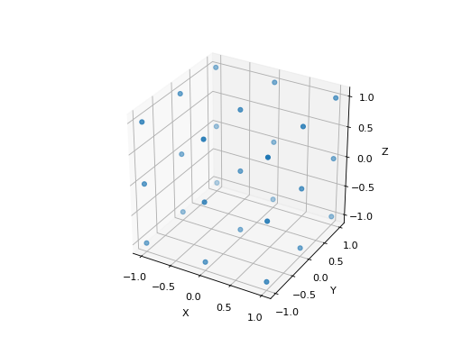
{kind=link}
{kind=link}
- spharpy.samplings.dodecahedron(radius=1.0)[source]#
Generate a sampling based on the center points of the twelve dodecahedron faces.
- Parameters:
radius (number, optional) – Radius of the sampling grid. The default is
1.- Returns:
sampling – Sampling positions. Sampling weights can be obtained from
calculate_sampling_weights.- Return type:
Examples
>>> import spharpy as sp >>> coords = sp.samplings.dodecahedron() >>> sp.plot.scatter(coords)
(
Source code,png,hires.png,pdf)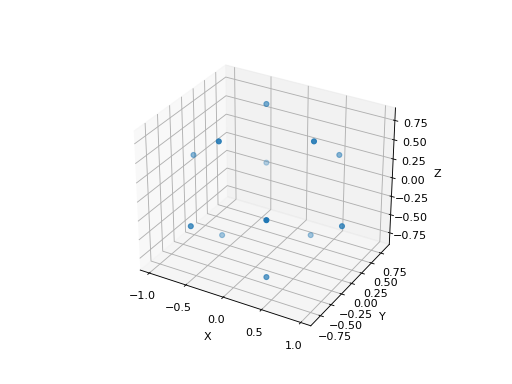
{kind=link}
{kind=link}
- spharpy.samplings.eigenmike_em32()[source]#
Microphone positions of the Eigenmike em32 by mhacoustics.
The data are according to the Eigenstudio user manual on the homepage [1].
References
- Returns:
sampling – SamplingSphere object containing all sampling points
- Return type:
Examples
>>> import spharpy as sp >>> coords = sp.samplings.eigenmike_em32() >>> sp.plot.scatter(coords)
(
Source code,png,hires.png,pdf)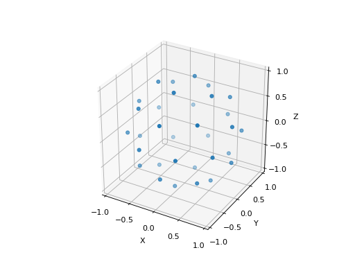
{kind=link}
{kind=link}
- spharpy.samplings.eigenmike_em64()[source]#
Microphone positions of the Eigenmike em64 by mhacoustics.
according to the Eigenmuke user manual on the homepage [2].
References
- Returns:
sampling – SamplingSphere object containing all sampling points
- Return type:
- spharpy.samplings.equal_angle(delta_angles, radius=1.0)[source]#
Generate sampling of the sphere with equally spaced angles.
This sampling contain points at the North and South Pole. See
equiangular,gaussian, andgreat_circlefor samplings that do not contain points at the poles.- Parameters:
delta_angles (tuple, number) – Tuple that gives the angular spacing in azimuth and colatitude in degrees. If a number is provided, the same spacing is applied in both dimensions.
radius (number, optional) – Radius of the sampling grid. The default is
1.
- Returns:
sampling – Sampling positions. Sampling weights can be obtained from
calculate_sampling_weights.- Return type:
Examples
>>> import spharpy as sp >>> coords = sp.samplings.equal_angle(delta_angles=45) >>> sp.plot.scatter(coords)
(
Source code,png,hires.png,pdf)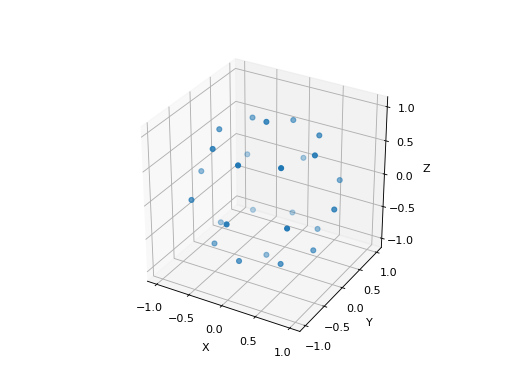
{kind=link}
{kind=link}
- spharpy.samplings.equal_area(n_max, condition_num=2.5, n_points=None)[source]#
Sampling based on partitioning into faces with equal area.
The implementation is based on [3] and Leopardi’s MATLAB implementation.
- Parameters:
n_max (int) – Spherical harmonic order
condition_num (double) – Desired maximum condition number of the spherical harmonic basis matrix
n_points (int, optional) – Number of points to start the condition number optimization. If set to None n_points will be (n_max+1)**2
- Returns:
sampling – SamplingSphere object containing all sampling points
- Return type:
References
Examples
>>> import spharpy as sp >>> coords = sp.samplings.equal_area(n_max=3) >>> sp.plot.scatter(coords)
(
Source code,png,hires.png,pdf)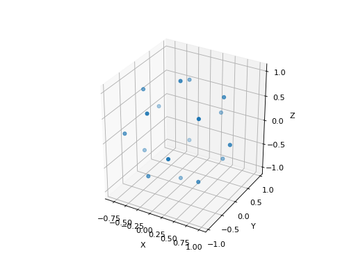
{kind=link}
{kind=link}
- spharpy.samplings.equiangular(n_points=None, n_max=None, radius=1.0)[source]#
Generate an equiangular sampling of the sphere.
For detailed information, see [4], Chapter 3.2. This is a quadrature sampling with the sum of the sampling weights in sampling.weights being \(4\pi\) if the number of rings is even and the number of points in azimuth and elevation are equal. This condition is always fulfilled if the number of points is chosen through
n_max. This sampling does not contain points at the North and South Pole and is typically used for spherical harmonics processing. Seeequal_angleandgreat_circlefor samplings containing points at the poles.- Parameters:
n_points (int, tuple of two ints) – Number of sampling points in azimuth and elevation. Either n_points or n_max must be provided. The default is
None.n_max (int) – Maximum applicable spherical harmonic order. If this is provided, ‘n_points’ is set to
2 * n_max + 1. Either n_points or n_max must be provided. The default isNone.radius (number, optional) – Radius of the sampling grid. The default is
1.
- Returns:
sampling – Sampling positions including sampling weights.
- Return type:
References
Examples
>>> import spharpy as sp >>> coords = sp.samplings.equiangular(n_max=3) >>> sp.plot.scatter(coords)
(
Source code,png,hires.png,pdf)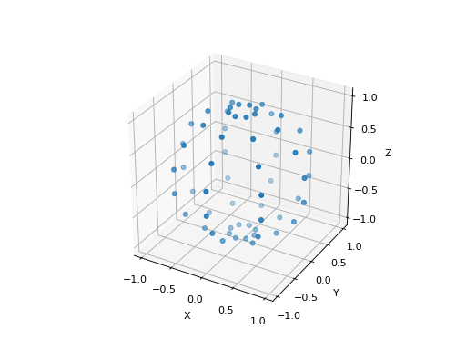
{kind=link}
{kind=link}
- spharpy.samplings.fliege(n_points=None, n_max=None, radius=1.0)[source]#
Return Fliege-Maier spherical sampling grid.
For detailed information, see [5]. Call
sph_fliegefor a list of possible values for n_points and n_max. This is a quadrature sampling with the sum of the sampling weights in sampling.weights being \(4\pi\).- Parameters:
n_points (int, optional) – Number of sampling points in the grid. Related to the spherical harmonic order by
n_points = (n_max + 1)**2. Either n_points or n_max must be provided. The default isNone.n_max (int, optional) – Maximum applicable spherical harmonic order. Related to the number of points by
n_max = np.sqrt(n_points) - 1. Either n_points or n_max must be provided. The default isNone.radius (number, optional) – Radius of the sampling grid in meters. The default is
1.
- Returns:
sampling – Sampling positions including sampling weights.
- Return type:
Notes
This implementation uses pre-calculated points from the SOFiA toolbox [6]. Possible combinations of n_points and n_max are:
n_points
n_max
4
1
9
2
16
3
25
4
36
5
49
6
64
7
81
8
100
9
121
10
144
11
169
12
196
13
225
14
256
15
289
16
324
17
361
18
400
19
441
20
484
21
529
22
576
23
625
24
676
25
729
26
784
27
841
28
900
29
References
Examples
>>> import spharpy as sp >>> coords = sp.samplings.fliege(n_max=3) >>> sp.plot.scatter(coords)
(
Source code,png,hires.png,pdf)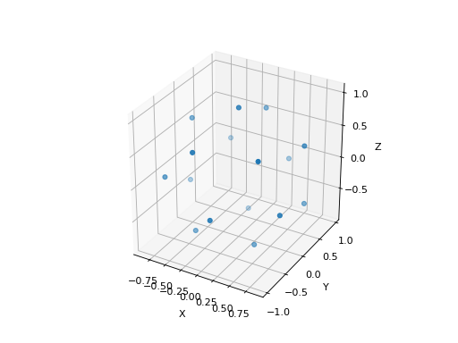
{kind=link}
{kind=link}
- spharpy.samplings.gaussian(n_points=None, n_max=None, radius=1.0)[source]#
Generate sampling of the sphere based on the Gaussian quadrature.
For detailed information, see [7] (Section 3.3). This is a quadrature sampling with the sum of the sampling weights in sampling.weights being \(4\pi\). This sampling does not contain points at the North and South Pole and is typically used for spherical harmonics processing. See
equal_angleandgreat_circlefor samplings containing points at the poles.- Parameters:
n_points (int) – Number of sampling points in elevation. The number of points in azimuth is always
2*n_points. Either n_points or n_max must be provided. The default isNone.n_max (int) – Maximum applicable spherical harmonic order. If this is provided, n_points is set to
(2 * (n_max + 1), n_max + 1). Either n_points or n_max must be provided. The default isNone.radius (number, optional) – Radius of the sampling grid in meters. The default is
1.
- Returns:
sampling – Sampling positions including sampling weights.
- Return type:
References
Examples
>>> import spharpy as sp >>> coords = sp.samplings.gaussian(n_max=3) >>> sp.plot.scatter(coords)
(
Source code,png,hires.png,pdf)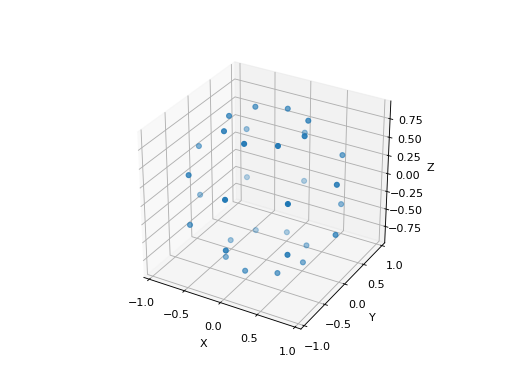
{kind=link}
{kind=link}
- spharpy.samplings.great_circle(elevation=array([-90., -80., -70., -60., -50., -40., -30., -20., -10., 0., 10., 20., 30., 40., 50., 60., 70., 80., 90.]), gcd=10, radius=1, azimuth_res=1, match=360)[source]#
Spherical sampling grid according to the great circle distance criterion.
Sampling grid where neighboring points of the same elevation have approx. the same great circle distance across elevations [8].
- Parameters:
elevation (array like, optional) – Contains the elevation from wich the sampling grid is generated, with \(-90^\circ\leq elevation \leq 90^\circ\) (\(90^\circ\): North Pole, \(-90^\circ\): South Pole). The default is
np.linspace(-90, 90, 19).gcd (number, optional) – Desired great circle distance (GCD). Note that the actual GCD of the sampling grid is equal or smaller then the desired GCD and that the GCD may vary across elevations. The default is
10.radius (number, optional) – Radius of the sampling grid in meters. The default is
1.azimuth_res (number, optional) – Minimum resolution of the azimuth angle in degree. The default is
1.match (number, optional) – Forces azimuth entries to appear with a period of match degrees. E.g., if
match=90, the grid includes the azimuth angles 0, 90, 180, and 270 degrees. The default is360.
- Returns:
sampling – Sampling positions. Sampling weights can be obtained from
calculate_sampling_weights.- Return type:
References
Examples
>>> import spharpy as sp >>> coords = sp.samplings.great_circle() >>> sp.plot.scatter(coords)
(
Source code,png,hires.png,pdf)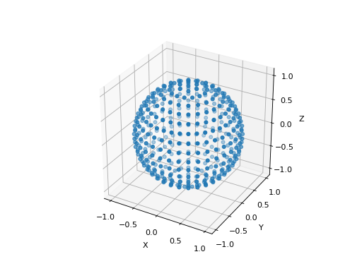
{kind=link}
{kind=link}
- spharpy.samplings.hyperinterpolation(n_points=None, n_max=None, radius=1.0)[source]#
Return a Hyperinterpolation sampling grid.
After Sloan and Womersley [9]. The samplings are available for 1 <= n_max <= 200 (
n_points = (n_max + 1)^2).- Parameters:
n_points (int) – Number of sampling points in the grid. Related to the spherical harmonic order by
n_points = (n_max + 1)**2. Either n_points or n_max must be provided. The default isNone.n_max (int) – Maximum applicable spherical harmonic order. Related to the number of points by
n_max = np.sqrt(n_points) - 1. Either n_points or n_max must be provided. The default isNone.radius (number, optional) – Radius of the sampling grid in meters. The default is
1.
- Returns:
sampling – Sampling positions including sampling weights.
- Return type:
Notes
This implementation uses precalculated sets of points from [10]. The data up to
n_max = 20are loaded the first time this function is called. The remaining data is loaded upon request.References
Examples
>>> import spharpy as sp >>> coords = sp.samplings.hyperinterpolation(n_max=3) >>> sp.plot.scatter(coords)
(
Source code,png,hires.png,pdf)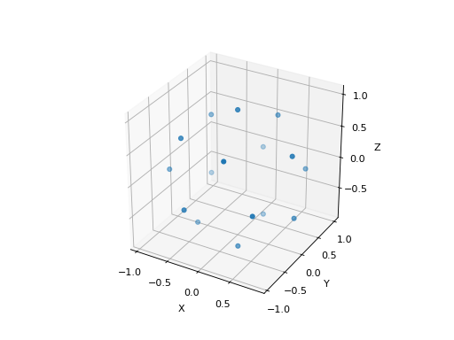
{kind=link}
{kind=link}
- spharpy.samplings.icosahedron(radius=1.0)[source]#
Generate a sampling from the center points of the twenty icosahedron faces.
- Parameters:
radius (number, optional) – Radius of the sampling grid. The default is
1.- Returns:
sampling – Sampling positions. Sampling weights can be obtained from
calculate_sampling_weights.- Return type:
Examples
>>> import spharpy as sp >>> coords = sp.samplings.icosahedron() >>> sp.plot.scatter(coords)
(
Source code,png,hires.png,pdf)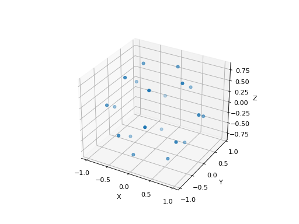
{kind=link}
{kind=link}
- spharpy.samplings.icosahedron_ke4()[source]#
Microphone positions of IHTA’s KE4 spherical microphone array. The microphone marked as “1” defines the positive x-axis.
- Returns:
sampling – SamplingSphere object containing all sampling points
- Return type:
Examples
>>> import spharpy as sp >>> coords = sp.samplings.icosahedron_ke4() >>> sp.plot.scatter(coords)
(
Source code,png,hires.png,pdf)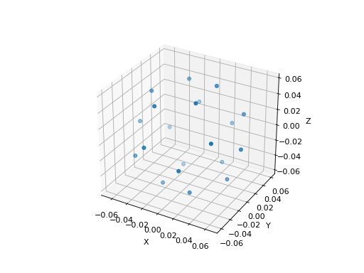
{kind=link}
{kind=link}
- spharpy.samplings.interior_stabilization_points(kr_max, resolution_factor=1)[source]#
Find stabilization points inside for an open spherical microphone array. The interior points stabilize the array response at the eigenfrequencies of the array. The algorithm is based on [11] and implemented following the Matlab code provided by Gilles Chardon on his homepage at [12]. The stabilization points are independent of the sampling of the sphere and can therefore be combined with arbitrary spherical samplings.
- Parameters:
kr_max (float) – The maximum kr value to be considered. This will define the upper frequency limit of the array.
resolution_factor (int) – Factor to increase the spatial resolution of the grid used to estimate the stabilization points.
- Returns:
sampling_interior – Coordinates of the stabilization points
- Return type:
Coordinates
References
- spharpy.samplings.lebedev(n_points=None, n_max=None, radius=1.0)[source]#
Return Lebedev spherical sampling grid.
For detailed information, see [13]. For a list of available values for n_points and n_max call
sph_lebedev. This is a quadrature sampling with the sum of the sampling weights in sampling.weights being \(4\pi\).- Parameters:
n_points (int, optional) – Number of sampling points in the grid. Related to the spherical harmonic order by
n_points = (n_max + 1)**2. Either n_points or n_max must be provided. The default isNone.n_max (int, optional) – Maximum applicable spherical harmonic order. Related to the number of points by
n_max = np.sqrt(n_points) - 1. Either n_points or n_max must be provided. The default isNone.radius (number, optional) – Radius of the sampling grid in meters. The default is
1.
- Returns:
sampling – Sampling positions including sampling weights.
- Return type:
Notes
This is a Python port of the Matlab Code written by Rob Parrish [14].
References
Examples
>>> import spharpy as sp >>> coords = sp.samplings.lebedev(n_max=3) >>> sp.plot.scatter(coords)
(
Source code,png,hires.png,pdf)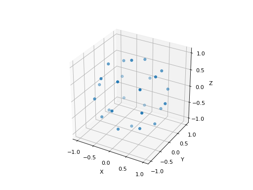
{kind=link}
{kind=link}
- spharpy.samplings.spherical_voronoi(sampling, round_decimals=13, center=0.0)[source]#
Calculate a Voronoi diagram on the sphere for the given samplings points.
- Parameters:
sampling (SamplingSphere) – Sampling points on a sphere
round_decimals (int) – Number of decimals to be rounded to.
center (double) – Center point of the voronoi diagram.
- Returns:
voronoi – Spherical voronoi diagram as implemented in scipy.
- Return type:
SphericalVoronoi
- spharpy.samplings.spiral_points(n_max, condition_num=2.5, n_points=None)[source]#
Sampling based on a spiral distribution of points on a sphere.
The implementation is based on [15].
- Parameters:
n_max (int) – Spherical harmonic order
condition_num (double) – Desired maximum condition number of the spherical harmonic basis matrix
n_points (int, optional) – Number of points to start the condition number optimization. If set to None n_points will be (n_max+1)**2
- Returns:
sampling – SamplingSphere object containing all sampling points
- Return type:
References
Examples
>>> import spharpy as sp >>> coords = sp.samplings.spiral_points(n_max=3) >>> sp.plot.scatter(coords)
(
Source code,png,hires.png,pdf)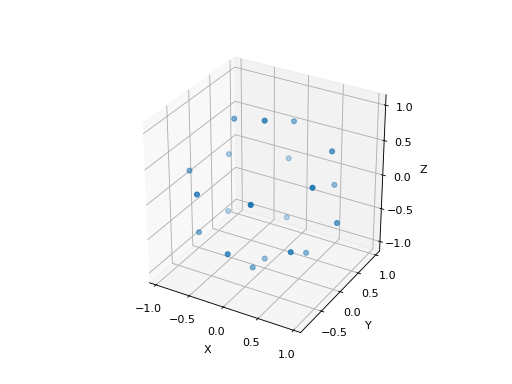
{kind=link}
{kind=link}
- spharpy.samplings.t_design(degree=None, n_max=None, criterion='const_energy', radius=1.0)[source]#
Return spherical t-design sampling grid.
For detailed information, see [16]. For a spherical harmonic order \(n_{sh}\), a t-Design of degree \(t=2n_{sh}\) for constant energy or \(t=2n_{sh}+1\) additionally ensuring a constant angular spread of energy is required [17]. For a given degree t
\[L = \lceil \frac{(t+1)^2}{2} \rceil+1,\]points will be generated, except for t = 3, 5, 7, 9, 11, 13, and 15. T-designs allow for an inverse spherical harmonic transform matrix calculated as \(D = \frac{4\pi}{L} \mathbf{Y}^\mathrm{H}\) with \(\mathbf{Y}^\mathrm{H}\) being the hermitian transpose of the spherical harmonics matrix.
- Parameters:
degree (int) – T-design degree between
1and180. Either degree or n_max must be provided. The default isNone.n_max (int) – Maximum applicable spherical harmonic order. Related to the degree by
degree = 2 * n_max(const_energy) anddegree = 2 * n_max + 1(const_angular_spread). Either degree or n_max must be provided. The default isNone.criterion (
const_energy,const_angular_spread) – Design criterion ensuring only a constant energy or additionally constant angular spread of energy. The default isconst_energy.radius (number, optional) – Radius of the sampling grid in meters. The default is
1.
- Returns:
sampling – Sampling positions. Sampling weights can be obtained from
calculate_sampling_weights.- Return type:
Notes
This function downloads a pre-calculated set of points from [18] . The data up to
degree = 20are loaded the first time this function is called. The remaining data is loaded upon request.References
Examples
>>> import spharpy as sp >>> coords = sp.samplings.t_design(n_max=3) >>> sp.plot.scatter(coords)
(
Source code,png,hires.png,pdf)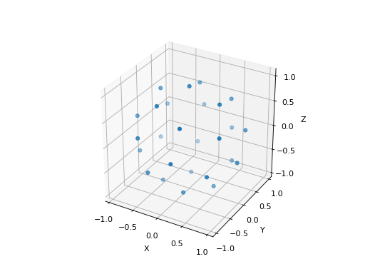
{kind=link}
{kind=link}